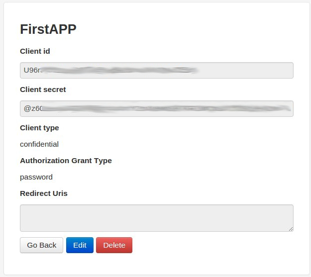

Getting Access Token Authentication - OAuth 2.0¶
Getting ID and Client Secret¶
We use OAuth 2.0 for authentication.
First, create an application on /o/applications/
2. Create a new application:
- name: any unique name
- client type: confidential
- authorization grant type: “Resource owner password-based”
3. Save the client id and client secret.
Example:
{kind=link}
Getting Access Token¶
To get the authorization token, we have to do a “http post” request on /o/token/ . A fast way is to use the Chrome Postman plugin or Firefox/RESTClient plugin.
Firstly, we have to login, on https://sync.appfluence.com , on the browser we are going to use the plugin. Once we are logged in, the plugin will catch directly the cookie to connect with the Appfluence API.
Then, we are going to use Chrome/Postman on our example.
1. On Basic Auth tab, we fill our ID and client secret, in the textboxes Username and Password respectively, and click on “Refres headers” to generate automatically the Authorization header:
2. We set the request to a POST one, and in the x-www-form-uncoded tab we are going write the our username, password and grant_type.
Then, we send the request, and the response will be the access_token.
Example:
3. In the request response we can see our access_token string, this is the parameter we need to connect to the API in our Priority Matrix python API.